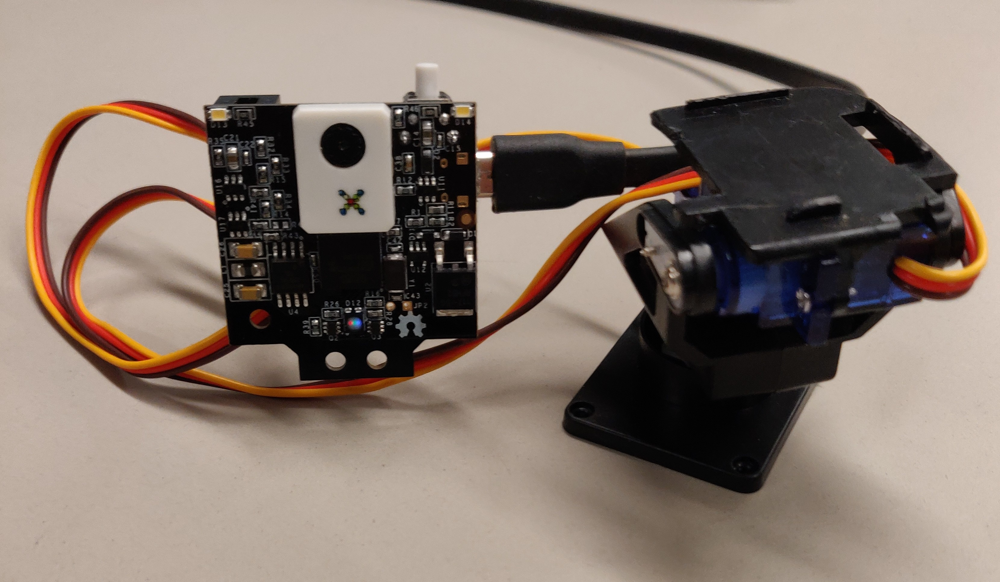
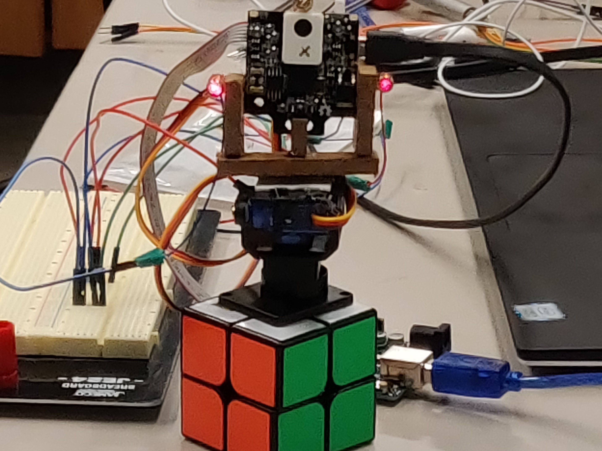
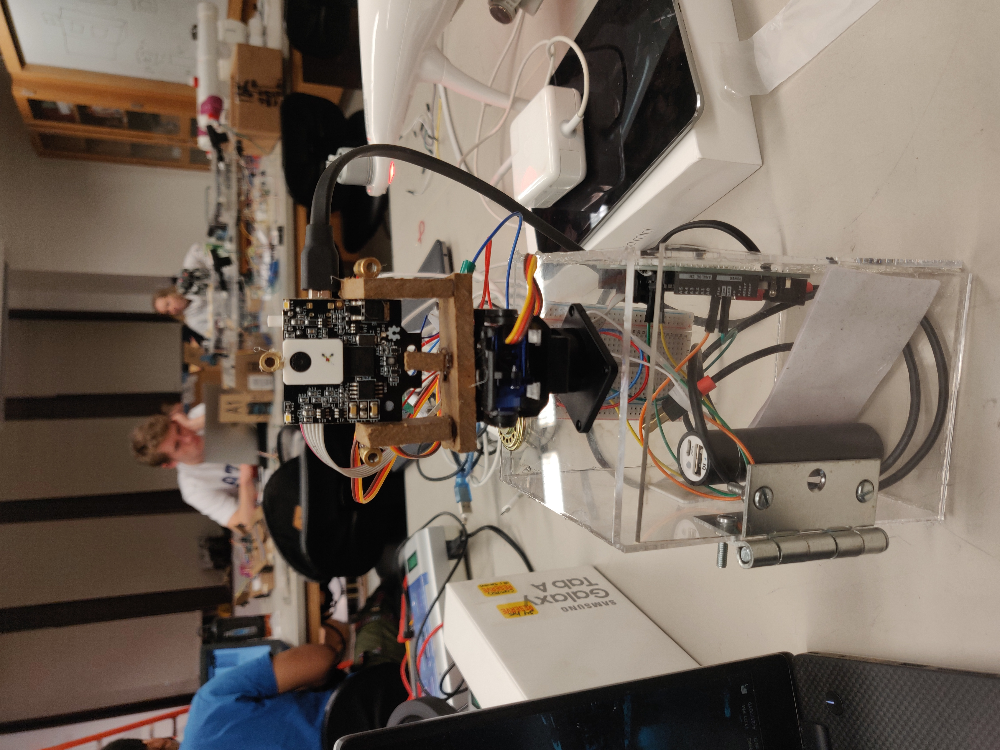

Stages of Development
Stage 1
In the first stage, I made cuts to the pan/tilt base to make room for wiring, and attached the camera.
Stage 2
This is an older version of the robot. The camera is glued onto the pan/tilt base, which is glued onto a rubik's cube. The lasers are all wired up!
Stage 3
After adjusting some parameters in PixyMon and testing some Arduino programs, I was able to get the turret to track me when I attach a reddish/pink marker to my shirt!
Stage 4
I constructed a new base for turret by laser cutting parts and attaching a door so that the wiring can be adjusted if necessary. In addition, the turret runs indipendently from the computer and continually pans back and forth until it finds a target.
Stage 5

I attached a speaker to the turret and programmed it so that it sounds an alarm when it identifies a target. I also programmed the turret so that it only shines its lasers when it finds a target. Finally, I added some decorative signs to scare intruders away.
Final Stage
In the final stage, I trained the turret to recognize a reddish-pink shirt as unauthorized. As you can see, it does not react when someone with a blue shirt walks into the room. When some enters the room with a reddish-pink shirt it sounds the alarm, shines lasers on me, and pans to track me as I move through the room.
Click here to view the code used to program the turret.
I hope you enjoyed! Contact me here if you are interested in learning more.